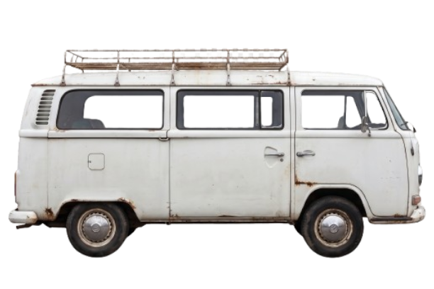

Sua jornada rumo à aprovação começa agora!

Isso apagará o progresso salvo neste dispositivo, incluindo conteúdos concluídos, XP, ciclos, revisões e veículos desbloqueados. Essa ação não pode ser desfeita.
Use este guia para conhecer as áreas do dashboard.
A barra mostra a proporção dos subtópicos concluídos em relação ao conteúdo cadastrado. O carro acompanha seu avanço.
Os circuitos organizam sua jornada. O Circuito 2 é liberado com 30% de progresso e o Circuito 3 com 70%.
Consulte disciplinas e subtópicos, marque o que concluiu e use Lançar novo ciclo para montar uma sequência de estudos e revisões pendentes.
Os conteúdos concluídos geram revisões programadas para os dias 0, 7 e 15. Quando vencidas, elas também podem aparecer intercaladas nos ciclos. Marque cada revisão como feita após realizá-la.
Veja o resumo do progresso e o andamento por disciplina.
Use os pontos XP para desbloquear veículos. Alguns carros exigem que determinado circuito esteja liberado. Você pode equipar um veículo para vê-lo na barra de progresso.
Salvar progresso baixa um arquivo de backup JSON. Guarde-o em local seguro. Carregar progresso permite selecionar esse arquivo para restaurar os dados neste dispositivo.
Apaga o progresso local e restaura o dashboard ao estado inicial. O sistema pede confirmação antes de executar.